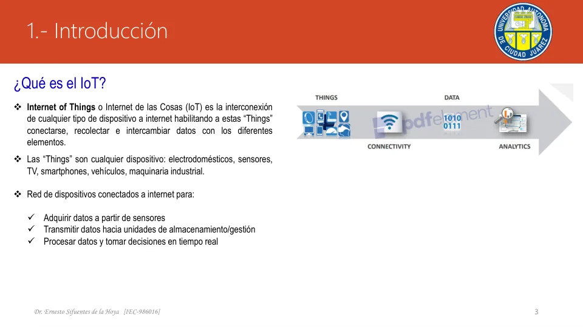
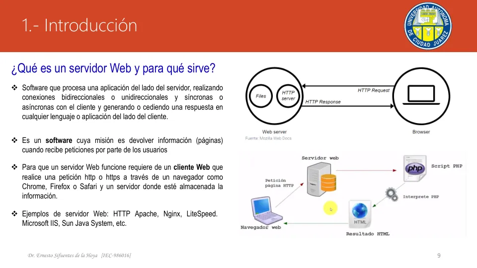
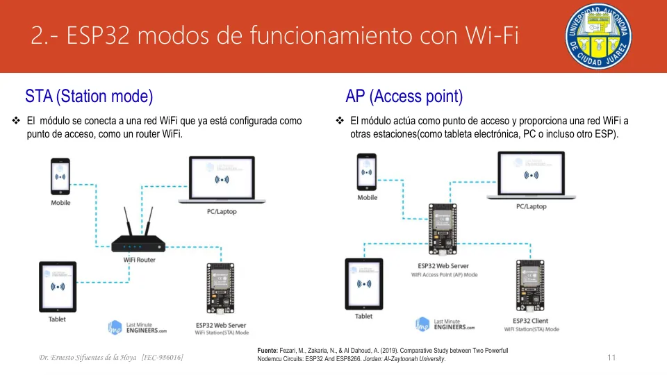
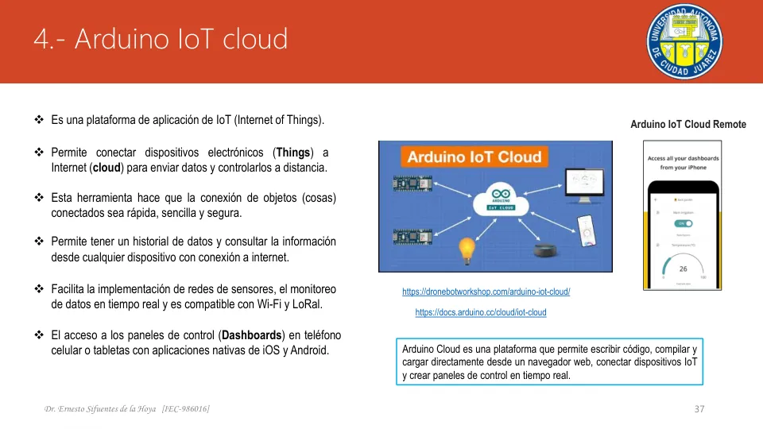

Video original del docente · requiere Internet
Abrir en YouTubeTÓPICOS DE INGENIERÍA ELÉCTRICA II · SEMANA 11 · 4 HORAS PRESENCIALES
Supervisión industrial: fundamentos SCADA e IoT con ESP32
De una lectura aislada a un sistema de supervisión: adquisición, redes, HMI, alarmas, historiador y control didáctico seguro.
Fundamentos Modelado Implementación Validación IA
1. Propósitos y organización de las clases
Clase 1 · 120 min
De IoT a la supervisión industrial: SCADA, HMI, servidor, historiador, alarmas, calidad del dato y seguridad. Reconocer modos STA, AP y AP+STA.
Evidencia: diagrama anotado de la arquitectura con flujo de datos y responsabilidades.
Clase 2 · 120 min
Desarrollar ejercicios Wi-Fi graduados con ESP32, servidor web y visualización de sensores. Contrastar modo local AP con STA conectado a una red existente.
Evidencia: programas, capturas, tabla de estados y pruebas de reconexión.
Los ejercicios originales 1–7 se conservan como recurso. Se ofrecen versiones adaptadas para que los títulos de archivo correspondan a las actividades de las diapositivas. Los ejercicios 8 y 9 de Arduino Cloud se estudian como transición hacia el Proyecto 2 de la Semana 12.
2. Qué es SCADA y qué aporta IoT
SCADA es un enfoque de supervisión, control y adquisición de datos. En un sistema industrial incorpora fuentes de medida, comunicación, estación de supervisión, HMI, alarmas, eventos e historiador. Un dashboard de IoT es una herramienta útil, pero su existencia por sí sola no convierte cualquier aplicación en un SCADA industrial completo.
| Función | Implementación didáctica de la Unidad II | Criterio de verificación |
|---|---|---|
| Adquisición | ESP32 + sensores analógicos | Datos trazables, unidades y frecuencia definida |
| Comunicación | Wi-Fi, HTTP y Arduino Cloud | Estado de enlace, latencia, desconexión |
| HMI | Navegador y Python | Variables, leyendas, límites y etiquetas |
| Alarmas | Umbrales con aviso y evento | Activación y desactivación verificadas |
| Historiador | CSV local e historial de eventos | Tiempo, medida, fuente y estado registrados |
| Control supervisado | LED de baja tensión | Comando, confirmación y estado seguro |
La selección de protocolos depende de la arquitectura: HTTP para prototipos web, MQTT para mensajería ligera y Modbus/TCP u OPC UA como ejemplos de tecnologías industriales que se estudiarán conceptualmente. En esta semana no afirmamos implementar OPC UA o un SCADA industrial certificado.


3. Arquitectura interactiva de supervisión
Seleccione cada bloque para identificar su función y qué evidencia debe entregar el estudiante.
Sensor: seleccionar rango, unidades, calibración y límites físicos.
Estados que debe vigilar el operador: dato válido, dato antiguo, sin conexión, alarma activa y comando confirmado.
4. Modos de red y ejercicios base
STA: estación
El ESP32 se une a un punto de acceso existente y obtiene una IP. Permite acceso desde clientes de esa red, según configuración y seguridad.
AP: punto de acceso
El ESP32 crea una red Wi-Fi local. Puede servir una HMI sin conexión a Internet.
AP + STA
Puede ofrecer conectividad local y a una red externa, con restricciones y consideraciones propias.
Arduino Cloud
Permite crear una Thing, variables y dashboard remoto; requiere una cuenta y configuración de dispositivos.


Seguridad: los ejercicios de control se realizan exclusivamente con LED y resistencias de baja tensión. La presentación original incluye cargas de 120 V CA mediante TRIAC como referencia histórica; no forman parte del montaje de esta práctica docente.
5. Exposiciones y problemas del docente
Video original del docente · requiere Internet
Abrir en YouTubeVideo original del docente · requiere Internet
Abrir en YouTube6. Ruta práctica: ejercicios 1 a 9
Reproduzca primero las pruebas esenciales y documente IP, tipo de red, respuesta web, mediciones y fallos. Los códigos originales están disponibles además de las versiones ajustadas.
| Ej. | Actividad | Firmware adaptado | Evidencia |
|---|---|---|---|
| 1 | Escanear redes disponibles | Descargar .ino | Estaciones y RSSI |
| 2 | Conectar al router (STA) | Descargar .ino | SSID, IP y estado |
| 3 | Servidor web en STA | Descargar .ino | HTTP request/response |
| 4 | LED por página web en STA | Descargar .ino | Comando y confirmación |
| 5 | Crear punto de acceso (AP) | Descargar .ino | Red local independiente |
| 6 | Control LED en AP | Descargar .ino | Control supervisado local |
| 7 | HMI del ADC en AP | Descargar .ino | Valores digital y calibrado |
Ejercicios 8 y 9: Arduino Cloud
Ejercicio 8: crear Thing y dashboard de una salida digital de baja tensión. Ejercicio 9: agregar lectura de sensor analógico al panel. Estas actividades se pueden realizar como extensión y sirven de preparación para la nube en el Proyecto 2.
- Ejecute el escaneo y documente RSSI e IP; evite incluir contraseñas en las capturas.
- Abra el servidor STA en el navegador y documente una solicitud HTTP.
- Demuestre control del LED y estado de confirmación; nunca con cargas de red eléctrica.
- Repita en modo AP y describa por qué funciona sin Internet.
- Verifique que el ADC produce códigos y voltajes plausibles comparados con un DMM.
- Pruebe una desconexión y argumente cómo un HMI debe tratar el dato antiguo.
7. Laboratorio interactivo: supervisión, alarmas e historiador
Modelo didáctico reproducible. Los valores son simulados; no corresponden a un sensor físico. Configure la señal, simule una pérdida de comunicación y compare el valor mostrado con el último dato válido.
Voltaje válido—
Estado de enlace—
Estado de alarma—
Eventos en historial0
Sin eventos.
Se marca el momento de adquisición simulado. Un dato retenido tras la desconexión no se etiqueta como lectura actual. La alarma se activa con dato válido, no durante la pérdida del enlace.
8. Evaluación formativa y tutor con IA
1. ¿Qué función diferencia un historial de datos de una simple lectura instantánea?
2. Si falla el enlace Wi-Fi, ¿qué debe hacer la HMI?
3. ¿AP requiere obligatoriamente un router e Internet?
Tutor de IA
Solicite una revisión socrática de su arquitectura con preguntas sobre comunicaciones, HMI, alarmas, historiador, desconexiones y seguridad.
9. Materiales y recursos de la Semana 11
Presentación original · Lección 9: IoT con ESP32 (60 diapositivas)
Se conserva íntegra. Incluye modos STA/AP, servidores web, ejercicios 1–9 y Arduino Cloud.
Abrir PDFDescargar PDFGuía de laboratorio adaptada · Semana 11
Procedimiento, ejercicios 1–7, matriz de evidencias y criterios de supervisión.
Abrir guía PDFDescargar PDFEjercicios 1 a 7 · ZIP original íntegro
Se mantienen los archivos sin alteración. El nombre «Ejercicio 1» dentro del ZIP original corresponde a un servidor web, no a un escaneo; por esa razón se incluyen siete sketches adaptados, numerados según la presentación.
Descargar ZIP originalArchivos de trabajo
Ejercicio 1 · .inoEjercicio 2 · .inoEjercicio 3 · .inoEjercicio 4 · .inoEjercicio 5 · .inoEjercicio 6 · .inoEjercicio 7 · .inoMateriales complementarios externos: Glosario NIST de SCADA y Arduino Cloud para ESP32.